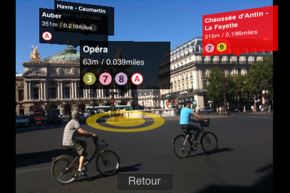
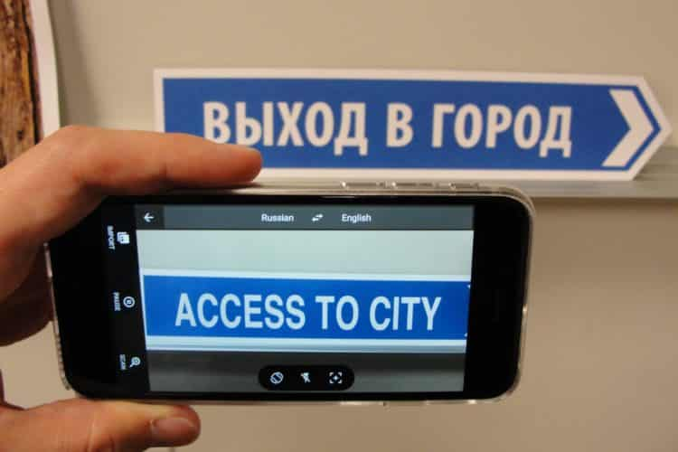
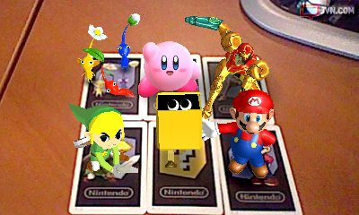
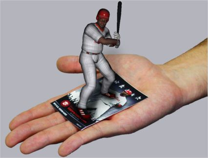
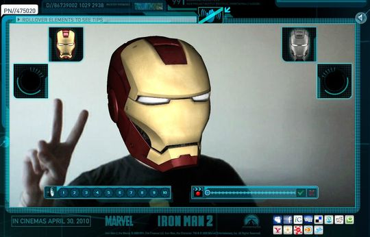
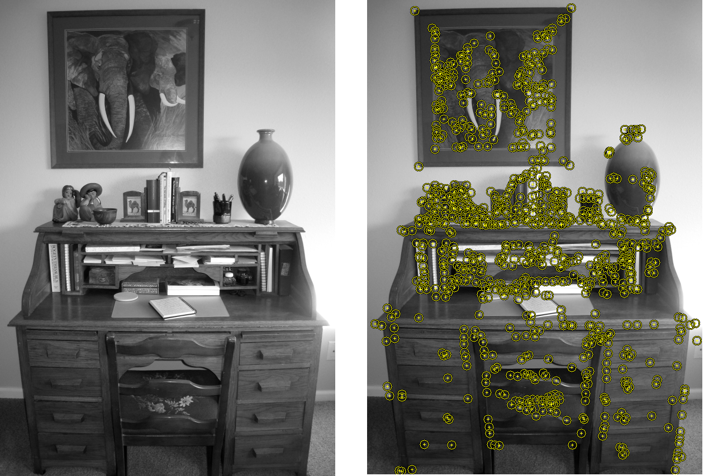
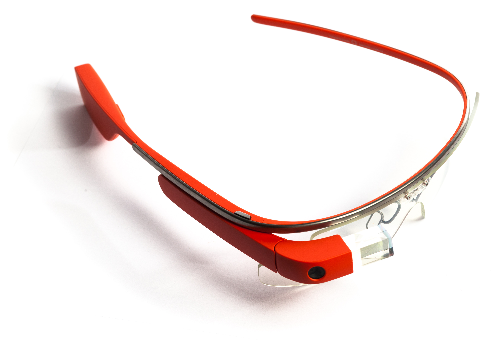
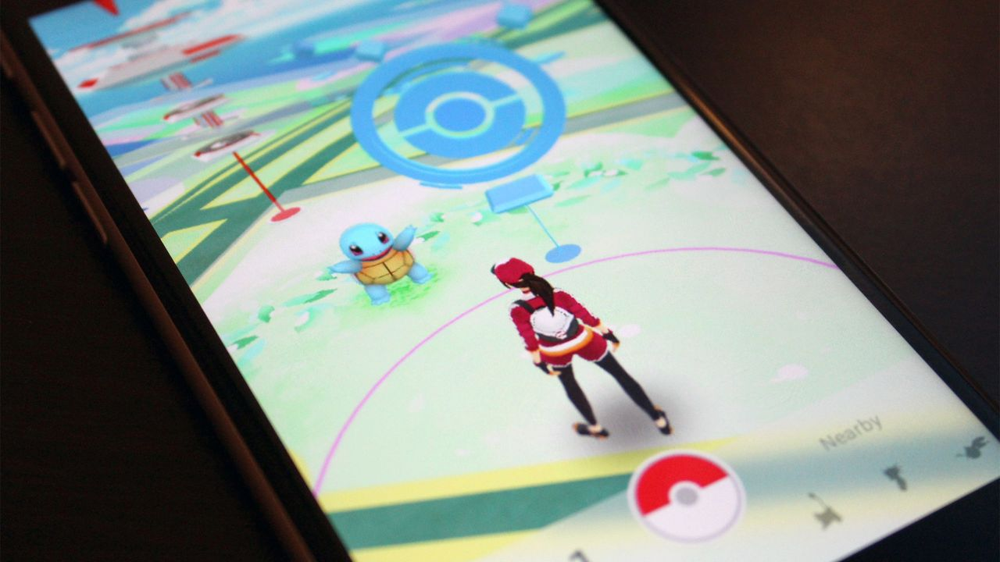

L'origine exacte des jeux en réalité alternée est difficile à déterminer, cependant, leur évolution semble avoir été marquée par les dates et événements suivants :
1996 : début de Dreadnot, premier jeu à présenter la plupart des caractéristiques des jeux en réalité alternée modernes : utilisation de divers sites internet, d'adresses et de numéros de téléphones pour les boîtes vocales de différents personnages, ainsi que d'endroits et de personnages réels de San Francisco, comme le maire de l'époque.
1999 : marketing du film Projet Blair Witch, qui présente des caractéristiques communes aux jeux en réalité alternée :
site internet donnant davantage de détail sur l'univers du film ;
utilisation de divers médias présentant l'histoire comme authentique : distribution d'avis de recherche et faux documentaire sur la chaîne Sci-Fi Channel ;
l'absence d'indication qu'il s'agit d'une œuvre de fiction fait toutefois ressembler l'opération à un canular ou à une tentative de création de légende urbaine?.
2001 : le jeu The Beast, faisant la promotion du film A. I. Intelligence artificielle, attire trois millions de joueurs et contribue à lancer la mode des jeux en réalité alternée, dont il deviendra le modèle. La même année, Electronic Arts lance Majestic, jeu en réalité alternée basé sur les théories de la conspiration sur le Majestic 12 et ne visant pas à promouvoir un produit, qui ne connaît cependant pas le même succès et se termine quelques mois à peine après son lancement.
2003 : le développeur français Lexis Numérique lance In Memoriam, jeu vidéo d'investigation nécessitant que le joueur cherche des informations sur internet, sur des sites créés spécialement dans ce but et sur des sites préexistants se prêtant au jeu (comme celui du journal Libération). Bien qu'il ne s'agisse pas au sens strict d'un jeu en réalité alternée, In Memoriam en présente plusieurs caractéristiques.
2004 : les créateurs de The Beast lancent "I Love Bees", jeu en réalité alternée servant de publicité au jeu vidéo Halo 2.
2005 : début de Perplex City, jeu en réalité alternée ne visant pas à faire la publicité de quoi que ce soit mais proposant un prix de 200000 dollars, qui connaît plus de succès que Majestic.
2006 : la chaîne américaine ABC lance plusieurs jeux en réalité alternée liés aux séries télévisées Kyle XY, Fallen (« Ocular Effect ») et LOST (« The Lost Experience »). L'année suivante, d'autres chaînes suivent cet exemple : CBS avec les séries Numb3rs(« Chain Factor ») et Jericho, NBC avec Heroes, ...
2007 : début de Why So Serious, jeu en réalité alternée promouvant le film The Dark Knight qui dure 15 mois et touche des centaines de millions d'internautes. La même année, Microsoft engage la société 42 Entertainment pour organiser Vanishing Point, jeu promouvant Windows Vista qui propose des prix incluant un voyage dans l'espace et le fait de voir son nom gravé sur les puces AMD Athlon 64 FX. Peu de temps après, 42 Entertainment organise le jeu Year Zero pour promouvoir l'album du même nom du groupe Nine Inch Nails.
2007 marque aussi le début des jeux en réalité alternée « sérieux », ne visant pas à faire la publicité d'un produit ou à simplement distraire ses participants, mais à les sensibiliser et à les faire réfléchir au sujet de problématiques réelles, en l'occurrence, l'amenuisement des ressources pétrolières avec World without Oil.
2008 : Find the Lost Ring, ARG organisé par McDonalds à l'occasion des jeux olympiques, dans six langues différentes avec des scénarii propres à chacune.
2009 : Début de I'm being followed, dont l'objectif promotionnel n'a pas encore été déterminé.
2012 : Sortie d'Ingress : un jeu en réalité alternée massivement multijoueurs développé par Google1 puis Niantic, qui fonctionne sur les appareils Android et depuis le 14 juillet 2014 sur iOS. Sorti le 15 novembre 2012 après une campagne de marketing viral commencée le 8 novembre, ainsi qu'au Comic-Con de San Diego le 12 juillet. Avant le lancement de la bêta privée sur le Play Store, le jeu a été testé pendant au moins 6 mois par les employés de Google sous le nom de code Nemesis.

2016 : Sortie de Pokémon Go, un jeu en réalité augmentée. Le projet est créé conjointement par The Pokémon Company et Niantic, responsable du jeu en réalité augmentée Ingress. Le jeu est disponible depuis juillet 2016 sur les plateformes iOS et Android. Tout comme dans la série de jeux vidéo, le but est de capturer des Pokémon.
Au lancement du jeu, celui-ci devient rapidement un phénomène de société. L'application, qui n'est pas encore téléchargeable officiellement dans tous les pays, dépasse localement ou mondialement le nombre de téléchargements de Twitter, Tinder, WhatsApp ou Snapchat, fait monter l'action de Nintendo de 93,2 % en une semaine à la bourse de Tokyo.
La réalité augmentée, comment ça marche ?
Pour faire de la réalité augmentée il faut trois choses :
- Percevoir l’environnement : caméra, GPS, boussole, accéléromètre
- Le comprendre et y intégrer les « améliorations » : ordinateur, smartphone
- Afficher la nouvelle perception : écran
Le smartphone étant portable et regroupant toutes ces caractéristiques il est la plate-forme idéale pour faire de la réalité augmentée.
Exemples de différentes façons de faire de la RA :
Métro Paris qui affiche des infos sur les stations de métro
L’application se sert du GPS et de la boussole pour localiser avec précision le téléphone, elle va pouvoir chercher les bonnes informations et les intégrer au flux vidéo provenant de la caméra de façon réaliste.

Google traduction : L’application localise et lit le texte, puis elle le traduit et enfin elle réécrit le texte sur le flux vidéo de la caméra.

Les ARTag
C’est une image simple que l’application va pouvoir repérer facilement et qui va lui permettre de connaître la position de la caméra dans l’espace pour ensuite superposer un modèle 3D par exemple.


Reconnaissance des visages, la aussi il faut reconnaître le visage et savoir dans quelle position il est pour pouvoir correctement intégré le modèle 3D :

Algorithmes
Deux étapes :
D’abord il faut analyser l’image en détectant soit :
- les « points d'intérêt » (méthodes : le seuillage d'image, la détection de coins, la détection de taches la détection de contours, etc.)

- un repère (ARTag)
- le flux optique (ou défilement visuel)
Ensuite on peut en déduire la position de la caméra dans l’espace avec des toujours plus de maths : géométrie projective, la géométrie épipolaire, l’algèbre géométrique, etc...
Nous avons jugé intéressant d'aborder dans uen troisième partie l'avenir des jeux en réalité alternée et, plus particulièrement, les différentes manières qui amèneraient ceux-ci à se développer. Pour cela, nous allons aborder l'innovation par le support puis par les jeux vidéo.
Un matériel toujours plus performant
Comme les jeux vidéo traditionnels et leur consoles ou PC, les JVRA ont leur propres plateformes. Des smartphones aux lunettes, les constructeurs innovent et permettent à ce marché un développement en plein essor.
Les jeux vidéo en réalité alternée sont traditionnellement connus pour être joué sur smartphone mais, comme nous l'avons vu précédemment, les plateformes sont nombreuses : sites Internet, lunettes intelligentes, etc. Pour satisfaire les exigences, ceux-ci doivent se montrer toujours plus performants et innovants. Les Google Glasses, des lunettes intégrant un écran, malgré un échec commercial, avaient le mérite de proposer une expérience vidéoludique en réalité alternée plus facile d'utilisation : plus besoin de tenir un objet à la main ou d'être connecté à un périphérique, les lunettes sont déjà un objet du quotidien pour beaucoup.

À l'instar de la Playstation 4 de Sony, de la Xbox One de Microsoft ou de la Nintendo Switch, il revient aux constructeurs de terminaux (Apple, Samsung, Google ou encore des starts-up) de penser les technologies de demain qui favorise le développement des jeux en réalité alternée.
Les jeux comme principal facteur de développement
Nous pensons cependant que les jeux vidéo seront le principal facteur de développement du marché des JVRA. La preuve en est avec Pokémon Go qui a fait sortir de l'ombre ce divertissement. S'il s'agissait certainement DU jeu à adapter, nous sommes assez optimistes pour penser que ce n'est pas la seule création capable de favoriser le développement du marché.

Tout d'abord, le transmédia nous paraît être une première approche intéressante pour les éditeurs/développeurs frileux à ce "nouveau" marché. Ce concept consiste à transposer un univers originalement créé pour un média à d'autres médias. Ubisoft s'en est fait une spécialité avec l'adaptation de ses jeux en romans, bandes dessinées, parc d'attractions ou plus récemment au cinéma avec le film Assassin's Creed. Ankama, autre studio français, a profité de la richesse des ses univers Dofus et Wakfu pour adopter le transmédia. Ainsi, de nombreux studios pourraient tenter d'aborder le marché des jeux en réalité alternée avec des univers déjà connus de leur public, comme ce fut le cas avec Pokémon Go, dont l'aura était cependant déjà énorme.
Pour des studios de développement déjà connus ou pour d'autres fondés spécialement pour ce marché, l'innovation reste selon nous le meilleur moyen de faire prospérer les jeux en réalité alternée. Se servir encore un peu plus du réel pour proposer une expérience vidéoludique est un nouveau défi qui peut être source d'inspirations pour nombre de game designers. Prenons par exemple une tendance de ces dernières années, le sport connecté. La moyenne d'âge des joueurs français étant de 35 ans (1), nous imaginons très bien ces deux domaines se marier. Des jeux en réalité alternée pourraient très bien inviter les joueurs à explorer une ville ou un coin de nature ou simplement à relever des défis physiques : sportifs comme découragés pourraient trouver là une nouvelle source d'encouragement. La moyenne d'âge Le sport, c'est bien, mais amusant, c'est mieux.
Les jeux de rôle pourraient également être une opportunité pour certains studios : imaginez devoir vous rendre à un tel endroit de votre ville pour recevoir une mission sous forme de défi ou même être amené à faire des choix. Ces derniers pourraient être pris en compte par les développeurs pour créer un univers réactif au comportement des joueurs, les immergant un peu plus dans un univers réel mais modifié.
Vous l'aurez compris, les idées de jeu sont nombreuses à devoir être explorer pour imaginer un marché qui fonctionne. Faut-il encore convaincre ceux qui fournissent le capital de faire confiance aux éditeurs et développeurs.
Nous pensons que le public est prêt à recevoir les jeux en réalité alternée. L'expérience Pokémon Go a sûrement était très instructive pour les éditeurs. Laissons-leur maintenant le temps de nous surprendre.. agréablement on l'espère. Nous avons voulu approfondir nos recherches avec un travail sur l'aspect économique des jeux en réalité alternée.
1 : clubic.com
L’économie dans les jeux vidéos est quelque chose qu'il ne faut pas prendre à la légère. En effet le marché du jeu vidéo se base aussi sur les supports qui vont avec les jeux comme par exemple, la Nintendo, la Xbox ou bien même les smartphones.
La 8e génération de consoles (Xbox One et PS4) se positionne clairement comme des terminaux multi-usages (jeux, télévision, internet,…), dans le but de devenir « le centre du salon » des maisons. Les éditeurs visent également aujourd’hui un public plus large qu’autrefois : le jeu vidéo s’étant démocratisé (en partie grâce aux terminaux mobiles) , les constructeurs de consoles de salon et les éditeurs développent donc leurs jeux et leurs consoles avec la volonté de conquérir ce nouveau marché (ce qu’avait fait la Wii de Nintendo avec beaucoup de succès).
Mais les jeux vidéos en réalité alternée font-ils vraiment fureur sur les smartphones ? La réponse est oui !
Les éditeurs sur Smartphones font apparaître une multitude de «petits» jeux, à petit budget, qui a pour but de passer le temps. Vendu peu cher, ou gratuit, ils sont utilisés par suffisamment de personnes pour être un modèle rentable.
Les jeux en réalité alternée sont crées principalement pour les smartphones de nos jours car leurs utilisations GPS permettent aux utilisateurs de se déplacer , ce qui n’est pas le cas pour les consoles de salons.
L’arrivée de la réalité alternée sur le marché n’est que le début d’un tout nouveau commerce. La venue d’une technologie innovante comme celle-ci change toujours la manière de fonctionner de différents milieux. Que ce soit l’arrivée des ordinateurs dans le monde du travail, des téléphones portables, d’internet ou des smartphones, chacun de ces changements a engendré un nouveau marché. Des entreprises ont fait fortune en proposant des biens et des services pour ces machines. La réalité alternée ne fait pas exception.
La réalité alternée à fait un bond en avant surtout avec Ingress et Pokemon GO, qui a attiré la curiosité des autres développeurs.
Effectivement, ll n’aura fallu qu’un mois à Pokémon GO pour devancer Candy Crush Saga et Clash Royale… des pilliers du jeux vidéos sur smartphone. L’application Pokémon GO développée par Niantic a rapporté plus de 200 millions de dollars (180,4 millions d’euros). Certes l’application est gratuite mais la somme provient des achats effectués par les joueurs dans le jeu.
La réalité alternée n’a pas fini de croître surtout avec l’arrivée de nouvelles technologies. La RA n’a pas dis son dernier mot et peut dépasser ses concurrents comme les consoles de salons.